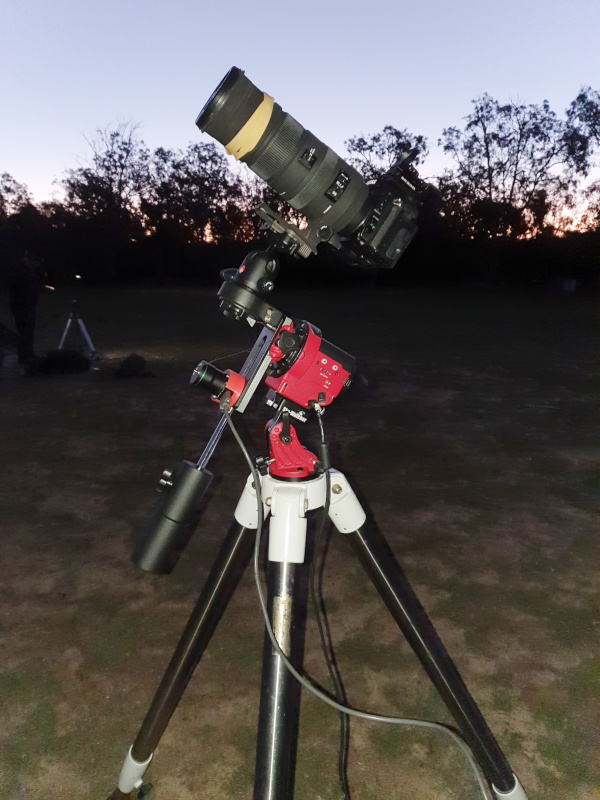
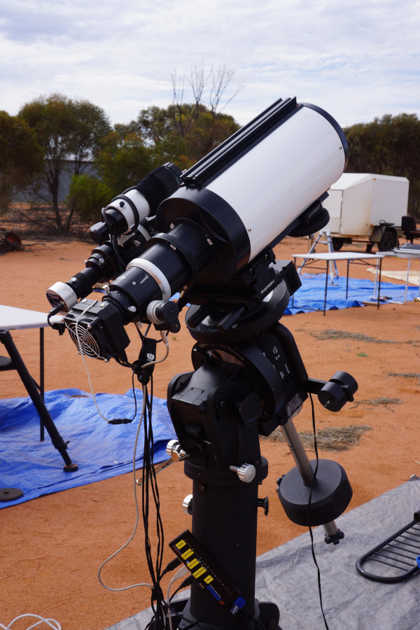
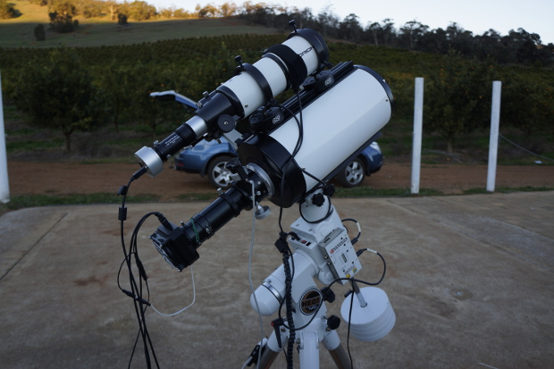

Quick links to my astrophotos here here for the sun and moon, comets, nebulae, galaxies, and planetary nebula.
I have been interested in astronomy for many years, and had the time to get back into observing and dived into the "dark" world of astro-imaging (astrophotography) a few years ago. I sold all my "deep space" imaging gear a couple of years ago and now use a light weight tracking mount (Skywatcher StarAdventurer) with a Pentax K1 DSLR.
Current set-up with Skywatcher StarAdventuere mount with Pentax K1 DSLR camera and 150-500 lens.
The Astronomy Group of Western Australia (AGWA) has been a great source of information and a good way to discuss equipment and problems with fellow astronomers.
My previous astronomy equipment comprised a 6" GSO RC Astrograph on a Skywatcher HEQ5 Pro mount and a Skywatcher EQ8 mount. For deep sky imaging I used a QHY-8 single shot colour ccd camera and auto-guide via an Orion ST80 refractor and an Orion Starshoot auto-guider.
Set-up with EQ8 mount with GSO 6" RC Astrograph and QHY-8 colour camera
Older set-up with HEQ5 mount with GSO 6" RC Astrograph and QHY-8 colour camera
The software I used for imaging comprised EQMOD for driving my mount, Nebulosity for image capture, PHD2 for auto-guiding and PixInsight for image processing. I would highly recommend PixInsight to anyone who is serious about astro-imaging.
Please find links to my astrophotos here here for the sun and moon, comets, nebulae, galaxies, and planetary nebula.